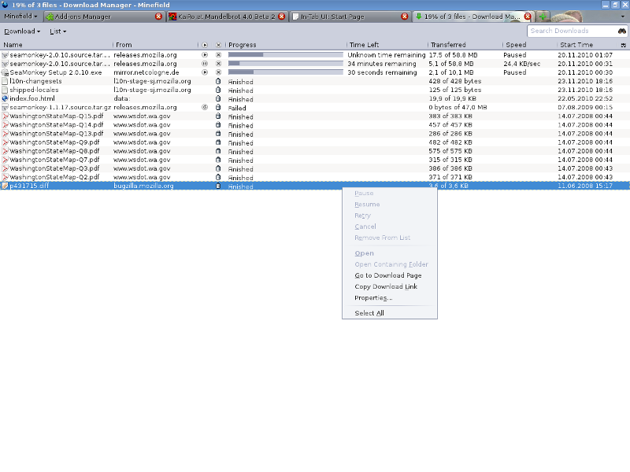

Table of Contents
In-Tab UI
The following slides can be found in this presentation:
In-Tab (In-Content) UI
Robert Kaiser,
"KaiRo" <kairo@kairo.at>
Mozilla contributor, add-on developer, SeaMonkey coordinator
Mozilla contributor, add-on developer, SeaMonkey coordinator
Slides: http://kairo.mozdev.org/slides/fosdem2011/
- Created for Mozilla Developer Room at FOSDEM 2011 in Brussels.
- Written with in HTML 5 with CSS 3 and JavaScript.
- Navigation with links on all slides, with accesskeys (e.g. "n"/Alt+Shift+N for "next") or back/forward keys
- Table of Contents
 02/2011 Robert Kaiser
02/2011 Robert Kaiser
Basic Description
- Eliminate separate windows
- Integrate UI into browser tabs
- Non-modal, non-popup
- Hide web-specific controls for those tabs
Current State
- about:config
- Session restore
- Network error and phishing/malware warning pages
- FF4 add-ons manager
Plans: Preferences
Stephen
Horlander, June 2010: preferences among targets - mockup:
Plans: Tentative
Stephen's blog post and
in-content
page design wiki page go further:
- Library (History and Bookmarks View)
- Downloads Manager
- Toolbar Customization
- Tab View
- Home tab
- About Firefox
- Help
Tahoe Data Manager
Jökulsárlón Download Manager

KaiRo.at Mandelbrot
Demo
Let's take a look at some currently working examples of in-tab UI!
Open Discussion
Thanks for your attention!
We should have some time for discussion now.
- Any open questions?
- Any unmentioned issues?
- Anything I forgot to mention?